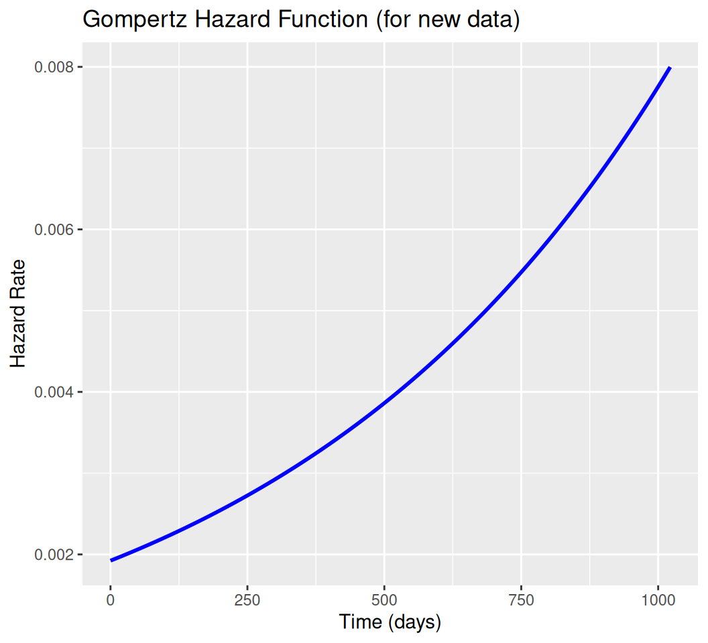

The Gompertz survival model is less commonly used but is particularly effective for modeling scenarios where the hazard rate increases exponentially over time. This makes it suitable for applications such as modeling mortality rates in aging populations or disease progression where risk accumulates rapidly.
Overview
The Gompertz survival model is a parametric model used in survival analysis to model time-to-event data, particularly when the hazard rate increases exponentially over time. It is widely used in fields like actuarial science, demography, and medical research (e.g., modeling mortality or disease progression) due to its ability to capture increasing hazard rates, such as those associated with aging or disease progression. The Gompertz model is part of the Accelerated Failure Time (AFT) framework in some implementations, but it is more commonly parameterized in terms of its hazard function, especially in R’s flexsurv package.
Key Features
Hazard Function: The Gompertz model assumes an exponentially increasing hazard rate, ( h(t) = e^{t} ), where the hazard grows rapidly over time, making it suitable for processes like aging where risk accumulates.
Applications: Used in mortality studies (e.g., human or animal lifespans), cancer progression, and reliability engineering for systems with increasing failure rates.
Assumptions: Assumes the hazard increases exponentially, driven by the shape parameter ( ). The model is less flexible than the generalized gamma but simpler than models with non-monotonic hazards (e.g., log-normal, log-logistic).
Advantages: Simple parameterization, captures increasing hazards well, and has closed-form expressions for survival and hazard functions.
Limitations: Cannot model decreasing or non-monotonic hazards (use log-normal or generalized gamma instead). May not fit data with complex hazard shapes.
The Gompertz distribution is defined by two parameters:
\(\lambda > 0\): Scale parameter, representing the baseline hazard at \(t = 0\).
\(\gamma > 0\): Shape parameter, controlling the rate of hazard increase (for \(\gamma = 0\), it reduces to the exponential model).
Hazard Function:
\[
h(t) = \lambda e^{\gamma t}, \quad t > 0
\] The hazard increases exponentially with time, reflecting accelerating risk.
Mean: The mean survival time is complex and involves integrals not expressible in closed form, but it can be computed numerically.
When to Use
Choose the Gompertz model when: - Nonparametric hazard estimates (e.g., from Kaplan-Meier or kernel smoothing) show a monotonically increasing hazard. - The data reflects processes like aging or disease progression where risk grows over time. - You need a model with a simple, interpretable hazard function and closed-form survival probabilities.
Model Fit Assessment
Use AIC/BIC to compare with other models (e.g., Weibull, log-normal).
Check residuals (e.g., Cox-Snell) or compare fitted survival curves to Kaplan-Meier estimates.
Validate the increasing hazard assumption with hazard plots or log-cumulative hazard plots.
Implementation in R
This tutorial demonstrates fitting a Gompertz survival model using R’s flexsurv package, as the survival package’s survreg does not directly support the Gompertz distribution. We’ll use the lung dataset from survival, consistent with your previous queries. The code includes data preparation, model fitting, predictions, plotting, and diagnostics, incorporating lessons from prior errors (e.g., Invalid status value, empty lung_clean, psurvreg, lines, and plotting issues).
Install Required R Packages
Following R packages are required to run this notebook. If any of these packages are not installed, you can install them using the code below:
time status age sex
Min. : 5.0 Min. :0.0000 Min. :39.00 Min. :1.000
1st Qu.: 166.8 1st Qu.:0.0000 1st Qu.:56.00 1st Qu.:1.000
Median : 255.5 Median :1.0000 Median :63.00 Median :1.000
Mean : 305.2 Mean :0.7237 Mean :62.45 Mean :1.395
3rd Qu.: 396.5 3rd Qu.:1.0000 3rd Qu.:69.00 3rd Qu.:2.000
Max. :1022.0 Max. :1.0000 Max. :82.00 Max. :2.000
Code
# Center age to improve numerical stabilitylung_clean$age_centered <- lung_clean$age -mean(lung_clean$age)# Create survival objectsurv_object <-Surv(time = lung_clean$time, event = lung_clean$status)
# Prediction for new data (60-year-old male)new_data <-data.frame(age_centered =60-mean(lung_clean$age), sex =1)median_time <-predict(gompertz_model_cov, newdata = new_data, type ="survival")[[1]]print("Median survival time (days):")
# Survival probability at t=500 dayssurv_prob <-summary(gompertz_model_cov, newdata = new_data, type ="survival", t =500)$estprint("Survival probability at t=500 days:")
[1] "Survival probability at t=500 days:"
Code
print(surv_prob)
NULL
Code
# Plot Kaplan-Meier and Gompertz curve (null model)km_fit <-survfit(surv_object ~1)plot(km_fit, main ="Kaplan-Meier vs Gompertz Survival Curve", xlab ="Time (days)", ylab ="Survival Probability", col ="black", lwd =2)t_seq <-seq(0, max(lung_clean$time), length.out =100)surv_gompertz <-summary(gompertz_model, t = t_seq, type ="survival")$estlines(t_seq, surv_gompertz, col ="red", lwd =2)legend("topright", c("Kaplan-Meier", "Gompertz"), col =c("black", "red"), lwd =2)
# 4. Hazard Plot (for new_data)haz_gompertz <-summary(gompertz_model_cov, newdata = new_data, type ="hazard", t = t_seq, tidy =TRUE)ggplot(haz_gompertz, aes(x = time, y = est)) +geom_line(col ="blue", lwd =1) +ggtitle("Gompertz Hazard Function (for new data)") +xlab("Time (days)") +ylab("Hazard Rate")

Summary and Conclusion
The Gompertz survival model is a powerful tool for modeling time-to-event data with exponentially increasing hazard rates. It is particularly useful in contexts such as aging populations and disease progression, where risk accumulates rapidly over time. By leveraging the flexsurv package in R, we can effectively fit Gompertz models, make predictions, and assess model fit through various diagnostic plots. When applying the Gompertz model, it is crucial to ensure that the data meets the model’s assumptions, particularly the increasing hazard rate. Model diagnostics, including log-cumulative hazard plots and Cox-Snell residuals, help validate these assumptions and assess the model’s adequacy.